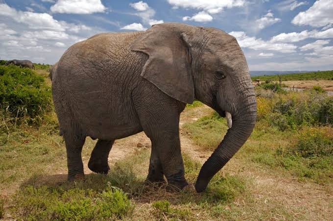

Dont judge me. I know most of you will judge me regardless.
Why do I start with that? simple. It's because i'm a pet freak;if that;s a thing;
Anyway i'm kidding...haha. I love dogs. I happen to own a couple of them but my favorite of them all happens to be my dear dog Kanye
Its a German shepherd and sadly I do not have any pictures of that Godly creature with me here so I guess you might not agree with me when I tell you of how good he is
But you know what i'm goin to do?...i'm going to attach a picture of a sweet elephant i came by online (dont mind me, im that silly). ENJOY!
This is an elephant.I absolutely love elephants
These are all the details you need to know about Kanye, my dog
let me look for a dog picture that looks almost same to Kanye